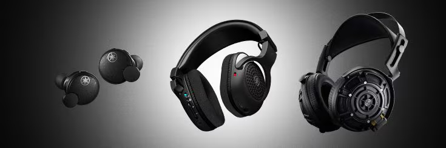
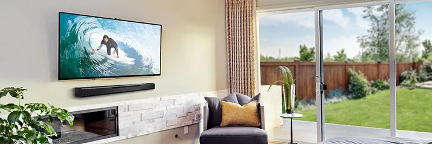
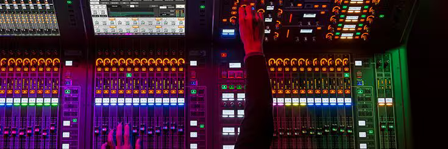

Yamaha
Productos
Instrumentos musicales
Instrumentos musicales, productos para el músico y su familia. Visite nuestros pianos, latón y de viento de madera, guitarras y tambores y mucho más.
Sintetizadores & Herramientas de Producción Musical
Herramientas de producción musical: sintetizadores, software, interfaces, grabadoras, mezcladores, altavoces, etc.
Auriculares
Auriculares Yamaha para escuchar música, instrumentos musicales, producciones musicales y de audio, transmisiones en vivo y juegos, y más.
Audio & Video
Productos de Audio y Video Yamaha: Receptores AV / Amplificadores, Cine en Casa, Componentes Hi-Fi, Sistemas de altavoces, Desktop Audio, y mucho más.
Audio Profesional
Equipos de sonido profesionales Yamaha: mezcladores, procesadores, amplificadores de potencia, altavoces, etc.
Comunicaciones Unificadas
Las soluciones de audio y vídeo para conferencias de Yamaha optimizan la colaboración y aumentan la productividad.
Aplicaciones
Yamaha
Los productos descritos en esta página web están conforme a Guatemala.
Algunas informaciones y sus contenidos son exclusivos para países específicos.